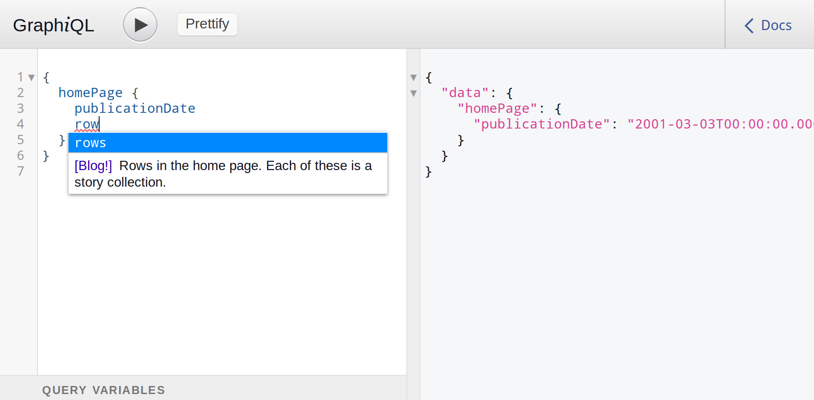

React, GraphQL and Relay in practice
Or, how do these new-fangled things fare in production
I'm Fábio
Looks like this

you know, for reference
React, GraphQL and Relay in practice
Your mileage may vary
React
- We didn't jump on the inline styles bandwagon
- It went quite well. Our designers didn't want to touch our ugly javascript, but they sure helped with CSS.
- Just use BEM to choose classnames, organise your CSS well, and avoid specificity of 2 or more.
- We kept our CSS small and put it all in an inline
<style>tag on top of the page. Boom! One request to render, no cache WTFs. And GZIP loved it.
React
- You write some code, and it works on the client and server
- Sprinkle a few
typeof window !== 'undefined' - Client works without javascript, you just have to use <a>
- Super straightforward
React
Single-page applications give you tons of performance but pay a high toll
- React made it super-easy
- Performance was awesome
- Third party code mostly has no idea of what is happening
- Super hard to explain why things work when you refresh but not when you navigate to places
React
- npmjs.com/promisescript was a HUGE help
- npmjs.com/react-i13n from Yahoo helped us integrate with analytics
- Synchronous third party libraries will kill your hard-earned perf
- Some don't know when to go away
- Some don't know what is a page change
- Google ads have to load all at once if you need to serve road blocks, good luck keeping your code sane after that 💀💀💀
E2E tests
- Use promisescript and get some loaders in the same module
var once = require('once')
var promisescript = require('promisescript')
module.exports.googleCustomSearch = once(() =>
new Promise((resolve) => {
window.__gcse = { ... }
promisescript({...})
})
)
module.exports.omniture = once(() =>
promisescript(...).then(window.s_gi))
thirdParty().then(whatever)E2E tests
- in your client entry point, hide your app behind a callback
if (/&TEST=1/.test(location.href)) {
window.loadThirdParties = Promise.all([
thirdParty1(),
thirdParty2(),
...
])
window.startApplication = startApplication
} else {
startApplication()
}
function startApplication() {
ReactDOM.render(...)
}
E2E tests
- in your selenium-driven tests, load the actual third parties and infect them with spies
hopefullyNotNightwatchJs.runOnClient((done) => {
window.loadThirdParties().then(() => {
sinon.spy(window, 's_gi')
window.startApplication()
assert(window.s_gi.calledOnce)
assert(window.s_gi.calledWith({
/* the exact analytics data you expect */
}))
}).then(done, done)
})
GraphQL
- Just awesome
- Has just the right amount of magic
- Super easy way to feed the frontend with data
- Works with any backend, including
return someJSON - Works for more frontends, which may do different queries
- You need to do lookups all the time
- One does not simply cache an arbitrary query language
- Try explaining ops why you need to cache POST requests
GraphiQL
It's awesome. Use it for debugging and query building
-

GraphQL
if you're using it or plan to use it
- Turns out you don't need to root everything in a
viewernode (as per official example code) unless you're dealing with user data. Relay hates it. - If you're building a content-based website like ours, try to unify your types and just have Content. Your cross-page components are going to love the consistency.
- Since it's not REST you can add versioning later without weird arity discussions. Just add
/graphql/v2 - Use graphiql. It turns out you can
wgettheir demo page and serve it in development mode. It just works.
Relay
- Client and the Server can use it to get data from GraphQL
- Your code will contain declarations of data you need
- Built-in cache
- Everything seems to be very easy to do
- Serverside rendering not supported natively. You'll need isomorphic-relay-router, isomorphic-relay, and react-router-relay.
- As of today, using serverside rendering implies opting into a very fast memory leak.
Relay
- On the one hand...
- Data just magically appears on the page for you to use
- On the other hand...
- Data just magically appears on the page for you to use
- The words "just" and "magically" should be triggering several alarms in your body right now
That memory leak we had
- As soon as serverside rendering was implemented, we of course started using Relay on the server to fetch data.
- We only got away with it because we had excellent devops.
The end.
Questions?